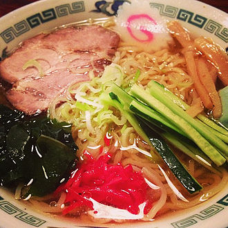
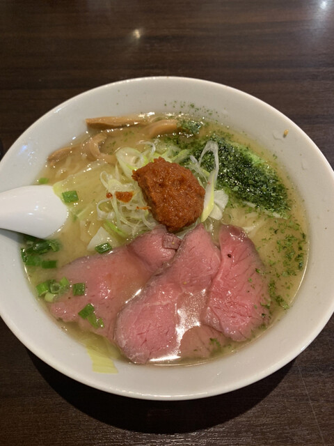
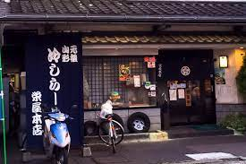

冷拉麵
冷やしラーメン\ cold ramen
冷拉麵由來

山形縣山形市本町拉麵店「栄屋本店」的第一代老闆，為因應熟客想要在夏天吃涼涼的拉麵的願望，在不斷的嘗試後，花了1年的時間終於在1952年開發成功。
山形市1933年7月的氣溫為40. 8度，幾乎可以說是日本的最高紀錄。拉麵評論家大崎裕史推測，當時可能由於拉麵的需求量下滑，便從蕎麥麵獲得靈感，開始尋求拉麵變涼的作法。
山形拉麵以醬油口味居多，因此山形的冷拉麵也幾乎都是醬油口味 。山形冷拉麵大約在2000年左右開始在東京廣為人知，約在2013年時，東京的冷拉麵開始流行用乾物作為高湯底，後來更出現鹽味高湯、番茄高湯、豚骨高湯等等多樣化的口味。
冷拉麵推薦
大木
 人氣的牛骨拉麵出自山形縣老闆之巧手。湯底使用黑毛和牛山形牛的腿骨（脛骨與大腿骨）熬煮12小時而成，相當耗時費工。美味秘訣來自熬煮過程中細心控制火侯，不讓湯底沸騰，因此湯底味道濃厚且呈現透明狀。特別值得推薦的是牛叉燒，不同於其他拉麵店使用豬肉，大木使用山形牛的大腿肉來製作叉燒。 低溫烘烤的牛大腿肉軟嫩且入口即化，若喜歡嫩牛肉口感的人可千萬不能錯過。使用冰塊急速冷凍的麵條，搭配和風牛骨湯底，是最適合夏天的風物詩！
榮屋本店
 榮屋本店是冷拉麵的發源地，可以說想吃到最正宗的冷拉麵，去榮屋準沒錯，若在榮屋本店點涼麵，就會看見晶瑩剔透的冰塊浮在濃厚的麵湯裡，將味道調節到恰到好處。 麵也是非常勁道，咬起來口感超好。 在收銀處還可以買到涼麵製作套餐，可以買來做為土特產。
滿月
 第三大拉麵名店之一的拉麵「滿月」，最特別之處，除了魚干加雞高湯
熬煮的清爽風醬油湯頭，另外就是拉麵加入了
中華風元素：餛飩和筍干！
最主打的是魚干和雞高湯熬煮的醬油拉麵，
再來才是味噌拉麵和鹽味拉麵，但這天看下來
大家都是點醬油拉麵比較多！比較特別的是
以冷麵呈現的夏季限定：冷拉麵和冷中華麵。
第三大拉麵名店之一的拉麵「滿月」，最特別之處，除了魚干加雞高湯
熬煮的清爽風醬油湯頭，另外就是拉麵加入了
中華風元素：餛飩和筍干！
最主打的是魚干和雞高湯熬煮的醬油拉麵，
再來才是味噌拉麵和鹽味拉麵，但這天看下來
大家都是點醬油拉麵比較多！比較特別的是
以冷麵呈現的夏季限定：冷拉麵和冷中華麵。
總結
來到最愛吃拉麵的山形縣，很推薦嘗試看看冷拉麵，因為很少有地方會有冷拉麵，其清爽和獨特的口感是一般拉麵無法體會到的， 所以愛吃拉麵的旅客千萬不能錯過這獨特的味道。